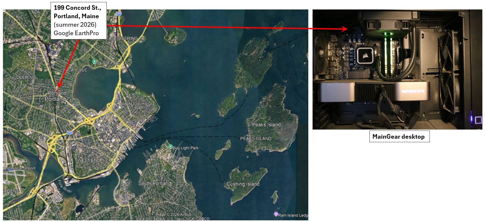

Since Maine has had several weeks of cold weather (often single digits during the night), the local rivers are
mostly frozen, therefore I have decided to create a virtual river (actually more of a virtual flume) using the
3D computational fluid dynamics modeling (CFD) software package DualSPHysics (https://dual.sphysics.org/), which
is based on a Smooth Particle Hydrodynamics (SPH) formulation.
Site Map: The virtual river existis within my desktop computer in my home office at 199 Concord Street, Portland, Maine.

Model Virtual Layout: The virtual river reach (or flume) is 14-m long and 3.6-m at its widest, there are 2 drops of 0.12-m at
the tranissions in width. The bed slope in between the drops is 0.01 m/m. the typical depth of flow is between 0.3- and 0.4-m,
except for where the flow goes super critical at the upstream drop. The SPH fluid particle size is 0.02-m and the model
consits of just over 2 million particles.